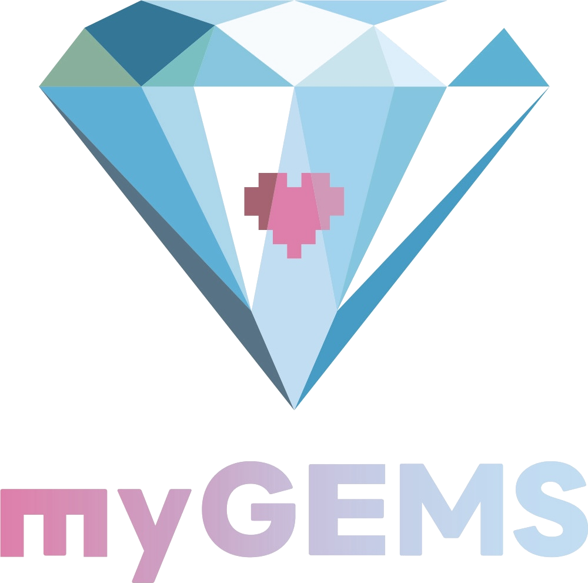

myGEMSは、医療機関のためのオーダーメイド生成AIコンサルティング。現場の課題を起点に、医療安全・臨床倫理・離島医療のDXを、共に設計し、共に実装していきます。

myGEMSは、麻酔科医とコンサルタントが共同設立した、医療機関専門の生成AIコンサルティングファームです。隠岐の島という離島を拠点に、大都市の医療機関から遠隔地・離島の公立病院まで、規模や立地を超えて寄り添います。
インシデント分析、ACP(アドバンス・ケア・プランニング)、臨床倫理コンサルテーション、職員教育。現場の「言葉にならない困りごと」を丁寧に拾い、生成AIで解ける形に翻訳する。それがmyGEMSの仕事です。
出版社、システムインテグレーターとの三者連携モデルにより、構想から運用、定着までを一気通貫で支援します。
Safe GENIE / Patient Safety 4.0
インシデントレポートの分析ボトルネックを解消し、PmSHELL・ImSAFER・RCA・CASTといった分析手法を生成AIで支援。Safety-IIの視点から、現場の学びを組織知へ変える仕組みづくりを提供します。
Clinical Ethics & ACP
人生の最終段階における意思決定支援(ACP)、臨床倫理コンサルテーションの現場に、生成AIによる情報整理・対話支援ツールを導入。医療者の迷いに寄り添い、意思決定の質を高めます。
Smart Island for Healthcare
離島・遠隔地の公立病院向けに、限られた人材・時間のなかでも運用できる生成AI導入パッケージを設計。スマートアイランド構想と連動した、持続可能な医療DXを推進します。
技術先行ではなく、現場のワークフローと困りごとから逆算して設計します。
実証から運用、定着まで、無理のない段階設計で医療機関の文化に馴染ませます。
安全・倫理・法規・専門職文化。医療固有の文脈を深く理解したうえで提案します。
出版社・システムパートナーと連携し、三位一体で医療機関に長く寄り添います。
「こんなこと、生成AIでできる?」そんな素朴な問いから始まるご相談を歓迎します。貴院・貴施設の課題を伺い、最適な伴走のかたちを一緒に考えさせてください。